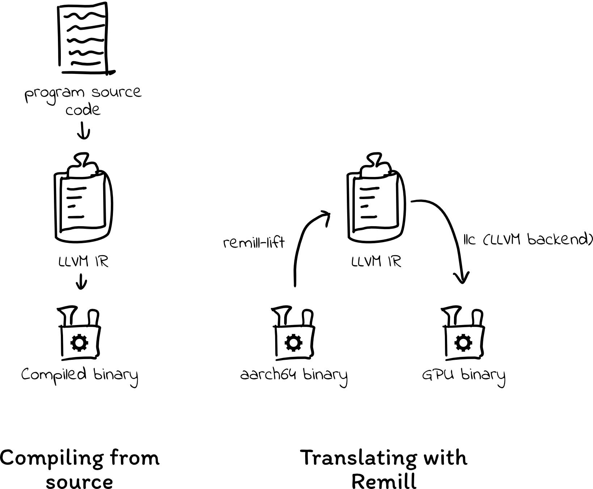
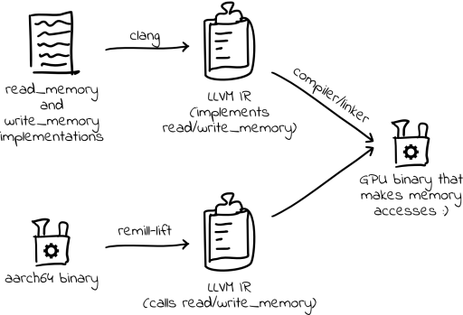
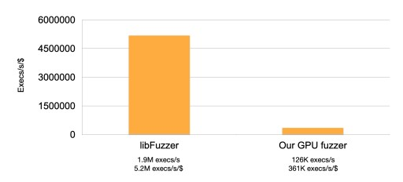
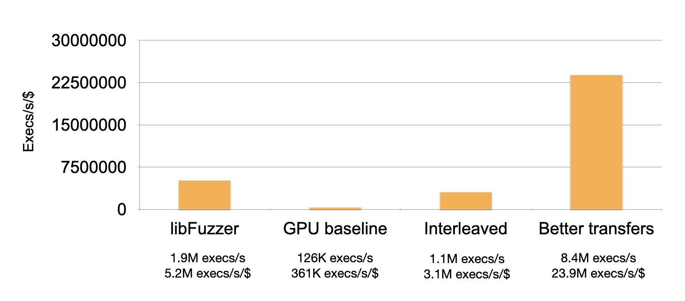

Let’s build a high-performance fuzzer with GPUs!
Trails of Bits的一篇博客，原文。
by Ryan Eberhardt, Stanford University
Motivation
- GPU算力价格便宜
- GPU适合执行并行执行
- fuzz很容易并行化
- 目标：使用GPU达到十倍速度
使用GPU的挑战
- GPU不能直接执行x86/arch67等指令
- 目标是fuzz无源码的嵌入式软件，无法直接放到GPU中执行。
- GPU没有操作系统
- 没有进程间地址空间隔离的概念，一个进程崩溃，会影响其他进程，需要进行进程间隔离。
- 没有系统调用，如文件打开、使用网络等，必须在GPU中模拟系统调用或使用CPU进行中继。
- GPU内存难以管理
- 有复杂的内存层次，性能高度依赖内存访问模式
- 内存不够：16G GPU内存分给要同时执行40k线程时，每个线程只有约419kB
通过二进制翻译在GPU执行代码
可以从原始二进制代码翻译到IR，再翻译到PTX。
- 使用Trail of Bits的工具Remill，将二进制”lift”为LLVM IR
- LLVM支持将LLVM IR转换为PTX代码

内存管理
实现了一个MMU:
- 使用remill替换读写操作，进行读写检查，同时拦截错误操作，防止整个fuzzer崩溃，保证进程间内存的独立
- 使用COW机制保证内存够用
初始性能

使用remill转换为LLVM IR，而后使用llvm转换为PTX，且通过remill修改read和write，从而加上MMU功能，就可以把aarch64程序放到GPU上并行执行了，由于没有实现突变器等组件，目前通过每秒执行次数来衡量性能。
以libpcap的BPF包为benchmark进行测试，原因如下：
- 其状态机对于人类来说过于复杂，不适合人类推导，适合fuzz
- BPF曾经有Bug，是适合fuzz的真实程序
- 没有系统调用
实现了一个简单的、从fuzzer获取包的应用，并且执行如下BPF过滤程序：
1 | dst host 1.2.3.4 or tcp or udp or ip or ip6 or arp or rarp |
和libFuzzer相比性能如下：

性能优化
优化内存访问
大多计算资源一直处于空闲状态，发现主要时间开销在访存上，之前一个warp内各个线程内存分开分配的，导致访存无法合并。
为此，进行了优化，将一个warp内的线程同时需要的内存放在了一起。
结果效率提高了一个数量级。
减少数据传输和kernel启动
之前直接使用统一内存在两个round间同步传输数据，导致数据传输开销很大，可以通过直接启动一个GPU kernel、避免CPU-GPU同步数据来解决。
- 直接分配全局内存在GPU侧
- round间在GPU侧对内存进行初始化
- 只和CPU异步传输必要的模糊测试信息，如导致crash的输入
最后的效果图如下，baseline是最初的实现，Interleaved是做了内存访问优化后的，Better transfers是做了内存传输优化后的。

What’s Next
- 硬件利用率仍然很低，内存还有进一步优化空间
- 系统调用还需要处理
More thoughts
GPU控制单元少、ALU多，适合计算型任务，单独运行CPU程序会很慢，但是如果以数千个线程并行运行CPU任务，或许会比在CPU上运行数千次快很多。
并行方法有两种：
- 全并行：整个程序转换为PTX代码，并行运行。
- 部分并行：程序部分计算任务转换为PTX代码，运行数千次程序至该任务前sync一下，而后将计算任务统一放到GPU上执行。
Challenges:
- 内存管理:
- 修改内存布局，以适应GPU访存模式
- 内存复用，不可能每个线程分配一遍内存，这会导致内存不够用
- 二进制翻译
- 系统调用的处理
更多：
- fuzz中很多计算过程都会重复，如何去除这些重复？
- 内存重复，如何去除？